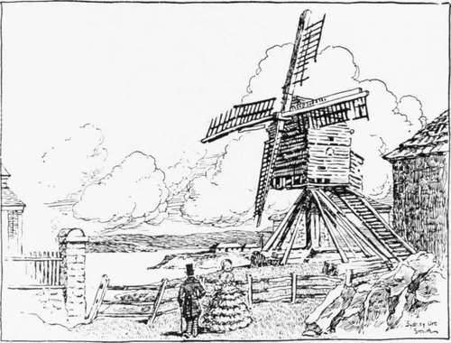
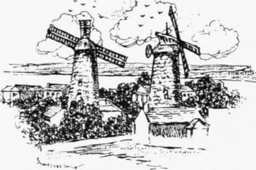
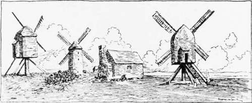

The Windmills Of Old Sydney. Part 3
Description
This section is from the book "Stories Of Old Sydney", by Charles H. Bertie.
The Windmills Of Old Sydney. Part 3
Our next view carries us down to Miller's Point, and depicts the last of the three windmills which, at various times, graced the Point. The mill in our illustration stood on the site of Messrs. Dalgety and Company's store in Merriman Street. A little to the north a terrace of three large houses marks the site of Underwood's mill, and to the south " Jack the Miller" (after whom the Point was named) had his mill. Mr. Xorman Selfe, in writing of this individual, says : " "Jack the Miller ' was a real historic personage about whom many interesting legends exist. On landing in Sydney in January, 1855, I went at once to live at Miller's Point, and have subsequently resided a good deal in that locality, where, in those days, tales of Tom Cribbs the butcher and Jack the Miller were current. One story says that the Governor offered the miller the whole of the Point if he would put a fence across the neck, but he declined the expense and thus lost the land.
His name was John Leighton, and he died in June, 1826, at the age of fifty-seven." The mill in our picture was existing in 1842, as it is shown in Prout's drawing of that year. It Avas acquired ultimately by Mr. Davis-one of the heroes of 1798- and donated by him for church purposes.
The drawing with two mills takes us across the city to the district once known as Woolloomooloo, but now as Darlinghurst. The ridge following roughly the course of the present Darlinghurst Road provided an ideal spot for windmills, and in the thirties this was the miller town of Sydney. In the Mitchell Library is an old panorama showing six windmills on this ridge. Mr. Smith's view, taken from an old woodcut, shows two stone mills which stood near the junction of the Roslyn Street and Darlinghurst Road of to-day, and north of where Kellett Street now runs. According to Mr. Selfe, the one on the right was erected by Mr. Thomas Barker, and the other by Air. Girard or Mr. Hyndes. The latter mill at one time was known as Donaldson's mill, Kellett House, the residence of Sir Stuart Alexander Donaldson, standing in close proximity to it. Within a short distance of these mills was found the finest windmill erected in Xew South Wales, and probably in Australia. It was known originally as Craigend mill, and stood to the east of the present Nimrod Street, near the corner of Darlinghurst Street, on the estate of Craigend, owned by Sir Thomas Mitchell, the explorer and Surveyor-General of New South Wales. The mill was known in 1845 as Hill's mill, afterwards as Fiddon's or Hope mill; in 1857 as
Mill on Miller's Point.
Mills near Darlinghurst Road and Koslyn Street.
Jenkin's; and in 1865 Captain Robert Towns became the owner of the building and proposed to convert it into workmen's dwellings. The sails or sweeps of this mill were fully forty feet long, and the total height to the top of the arms was one hundred and five feet. This fact was preserved for us because a young architect wras fond of yachting. The late Horbury Hunt was preparing the plans for its reconstruction in 1865, and in his diary of the 17th of January of that year is this entry: " Old windmill-got up on top platform, climbed out on shaft, as one of the arms was standing perpendicular climbed up it and with Jack knife cut a strip of wood off the arm, pointed it, and stuck it into the end of the arm at 105 feet from the ground." His observation on this entry in later years was Heing a yachtsman in those days accounts for the feat." Of the other windmills on the Darlinghurst ridge, two small wooden mills stood to the north of Liverpool Street, and another with a stone tower, known as Cdarkson's, occupied a site close to the present gaol. The last three mills are shown in the drawing.
Mills near Darlinghnrst Road and Liverpool Street.

Hough's Mill, Waverley.
Our next picture shows a good type of the old post mill. These were constructed so that the whole might be turned to allow the sails to catch the wind. The mill was erected by Mr. Hough about 1846 in Waverley; Mill Hill Street is a reminder for all time of its existence. It was demolished, according to Heaton's Dictionary of Dates, on 1st October, 1878, but a pencil note on the picture from which Mr. Smith's drawing was made gives the year as 1881.
This was the last of the old Sydney windmills, and with it ended what was the most picturesque period in the history of Sydney. T have read somewhere that an ardent lover of windmills in England is preparing a map on which a cross marks the spot where once a windmill stood. " There," he said " I will showr them what they have lost by steam," and in sympathy with him I feel somewhat disposed to head this chapter " What Sydney lost by steam."
Continue to: